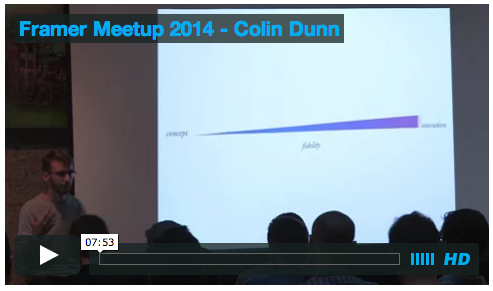
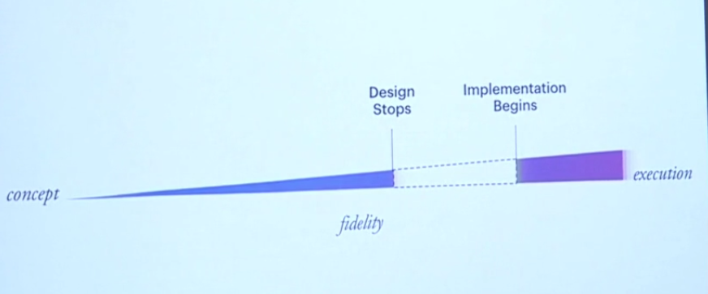

First Impression of FramerJS
seoh
Presentation-Driven Study
예전에 인턴할 때 윗기수의 선배가 "발표주도학습"이라는걸 주장한 적이 있는데 배우고 싶은 것을 발표하겠다고 공표하고 그때부터 배우기 시작하면 빠르게 배울 수 있다는 내용이었다. 그걸 해볼까 고민중
what the f...
"색상 좀 화사하게"
"구조를 좀 덜 갑갑하게"
Framer Meetup 2014
Colin Dunn,
drawing tool -> interaction design

Framer Meetup 2014

디자이너: 개발자에게 설명하기 위해
개발자: 개발자(self)에게 설명하기 위해
Inspired by Material Design
Materials from
Bakcbone: http://www.sketchappsources.com/
Icon: https://github.com/google/iosched
Trouble Shooting
- Sketch의 에러 메시지(Page 여러개 불가능)
- Older WebView/Safari의 제약이 그대로
- 누가 쓰라고 만든 툴인가
- 개발자들은 Sketch/Photoshop이 어렵고
- 디자이너/기획은 CoffeeScript가 어렵고
- Tutorial의 부재
Teardown Studio
PWD
/Application/Framer Studio.app/Contents/Resources/
FramerStudioEditor/
old
- JavaScript(CodeMirror) 기반
- static/js/autocomplete.coffee에서 자동완성 관리
new
- Native로 변경되며 폴더 사라짐
- Fragaria 사용
- Syntax Definitions/autocomplete.txt에서 자동완성 관리
FramerStudioScript/
- framerstudio.coffee
- Code Evaluation
- Compile, ErrorMessage
- compile before/after injection something?
FramerTemplate/
- 처음 시작하는 샘플 소스
- 1.5에서
server.command 추가
UserSnippets/
~/Library/Application Support/Framer Studio/Snippets- 에 복사하는 용도
framerps/
-
import from Photoshop using CocoaScript/Python
framersketch
-
import from Sketch using CocoaScript/Python
Tip 1. Injection
- Auto Complete
- Code Evaluation
Demo: Framer Examples(http://examples.framerjs.com/)에서 바로 Import하기
/Syntax Definitions/autocomplete.txt/FramerTemplate/index.html
demo: Android - On Time
Syntax Definitions/autocomplete.txt
exampleFrom
/FramerTemplate/index.html
<script>
window.exampleFrom = function(project, name) {
return Framer.Importer.load(
"http://examples.framerjs.com/static/examples/" +
project + ".framer/imported/" + name);
}
</script>
Framer Studio
exampleFrom "on-time", "OnTime"
Tip3: Inner Demo
<script src="framer/framer.js"></script>
<script type="text/javascript">
Framer.Session._RootElement = document.getElementById('framer');
</script>
<script src="app.js"></script>